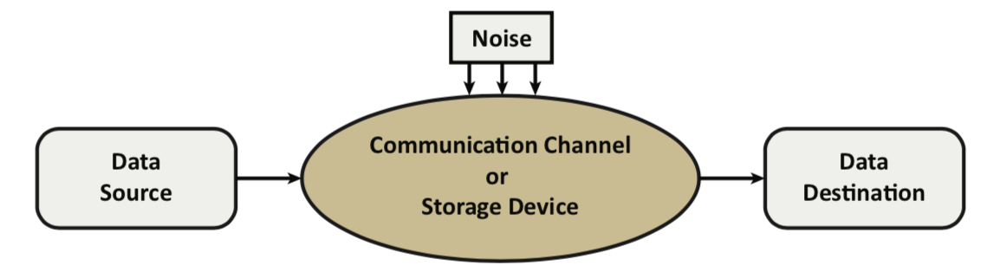
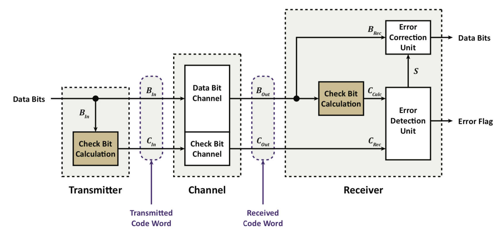
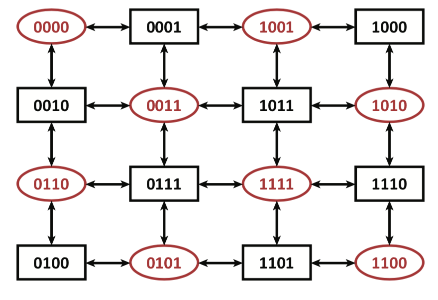
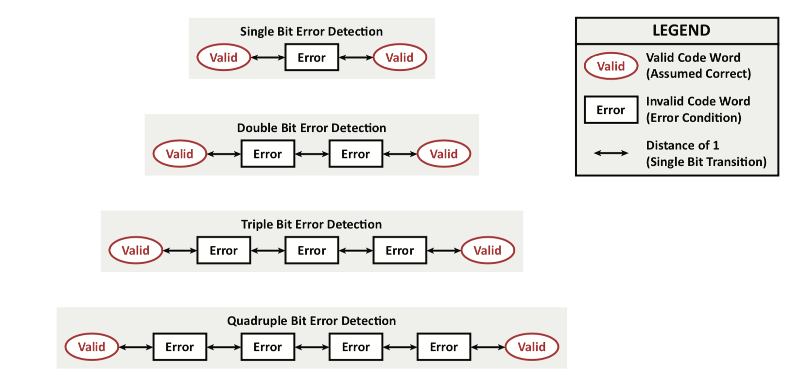
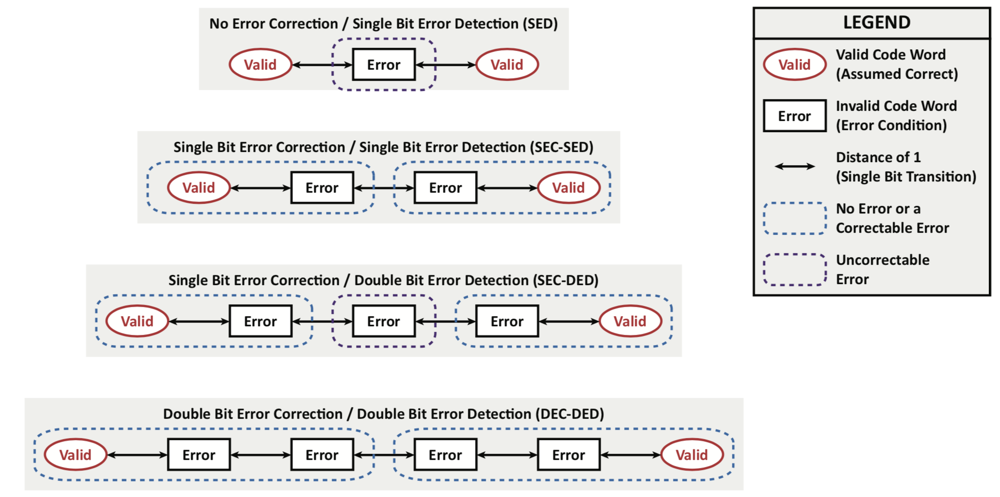
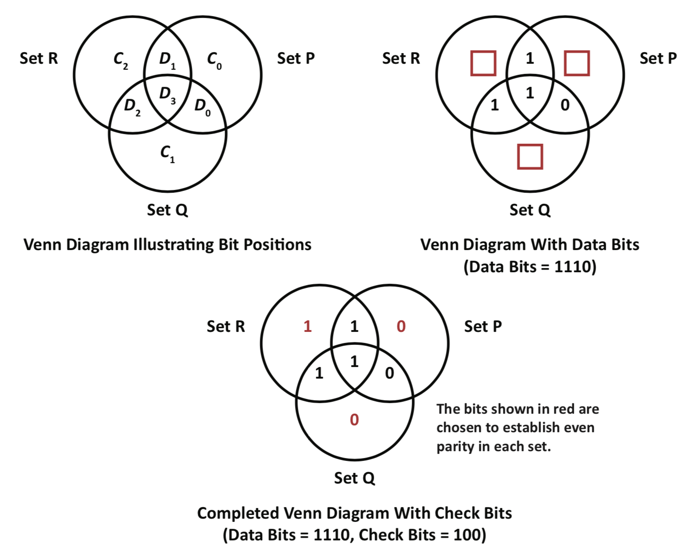
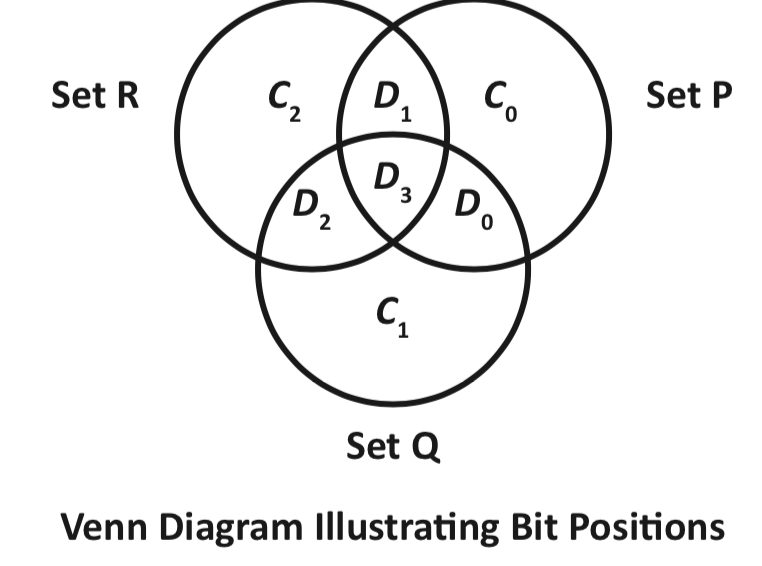
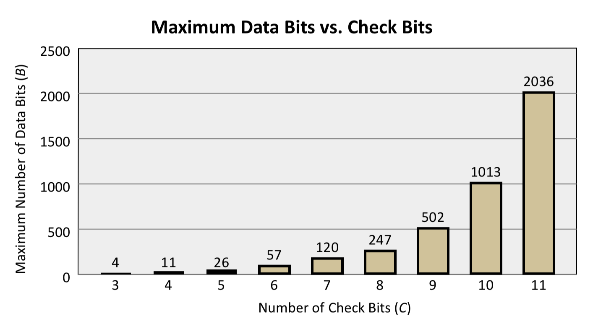
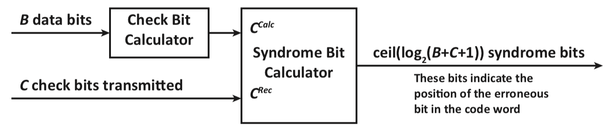

Errors may occur in any environment where data is either stored or transferred from one device to another:
Registers
Memory
Mass storage devices
Wired communication channels
Wireless communication channels
Errors may be classified as follows:
Hard Errors : A hard error is a persistent (repeatable) error (e.g., a memory bit stuck at 0 will always return a 0)
surprisingly easy to solve, just ignore if you know whats wrong and don’t use it
Soft Errors : A soft error is a transient (non-repeatable) error (e.g., the 4th bit of a transmission failed due to noise but the 4th bit of a subsequent transmission may be received correctly)
Communication Structure
errors-channel-with-noise
The following are the goals of error detection and error correction:
Error Detection(ED) : Given information to be transferred, sufficient (redundant) in- formation is added (at the data source) to make it possible to determine (at the data destination) that the received data is not the same as the original information
Error Correction(EC) : Given information to be transferred, sufficient (redundant) information is added (at the data source) to make it possible to recover (at the data destination) the original information
The received data may be: correct; incorrect, but correctable; incorrect but detectably received in error; or incorrect but not able to detect or correct the error(s).
Issues and More Terminology
Error rates and the overhead to detect errors are two issues to be considered:
Error Rate: The rate of errors on the channel. This may be specified as a probability. For example, 10^{-6} indicates that, on average, one bit in a million is in error. The errors may (or may not) be correlated. (i.e., the occurrence of an error may increase the likelihood that the next bit will be in error.)
Overhead: For our purposes we define overhead as the number of non-data bits divided by the total number of bits transferred.
There is a tradeoff between block recovery and byte / word recovery:
If recovery is at the smallest unit level (e.g., byte level), the system may be very responsive – the fewest bits to re-transmit, but there may be many extra bits to transmit
If recovery is done on a large group of bits – a re-transmission requires the entire group to be resent, but the number of bits transmitted in the initial transmission is smaller
In this context, a block of information may be treated as a group of bits for the purpose of error handling
TRIPLE MODULAR REDUNDANCY: 3 computers do the same calculation, and choose the same 2 (Used on the moon lander. 3 times the hardware required)
Data Words and Code Words
Let B be the number of bits of data and C be the number of check bits required to handle the errors (correction or detection at the required level)
Data Word: The information bits that are to be transferred over a channel. The data word has B bits of data. The data word is the smallest unit for error correction or detection.
Code Word: The combination of the B data bits and the C check bits used by an error handling algorithm. The exact order of the bits is specific to the error handling algorithm.
The number of bits actually transmitted is B + C bits. The overhead is expressed as:
OVERHEAD = \frac{C}{B+C}
In the event of an uncorrectable error, all B + C bits must be retransmitted
Communication Structure
Consider a system that uses a code word consisting of B data bits and C check bits:

Since the data bits and check bits are both being transmitted on the same channel, they both have equal probability of getting bad
Interpretation
Consider an arbitrary check bit calculation function of F (x):
If F (B_{in}) = F (B_{Out}) there has been no (detectable) error
If F (B_{in}) \neq F (B_{Out}) then F (x) allows for the following:
F(x) may provide sufficient information to detect some errors (ED only)
F(x) may provide sufficient information to correct some errors (EC only)
F(x) may provide sufficient information to correct some errors and detect but not correct other errors (EC-ED)
Limitations of Error Detection and Correction
Some errors can be neither detected nor corrected:
If the error handling algorithm was designed to handle fewer errors than actually observed:
Errors could convert a valid code word into a different valid code word and thus, the (erroneous) received data would be indistinguishable from the error-free reception of another valid code word
Errors could convert a valid code word into an invalid code word that would then be corrected into another valid code word
There could also be timing or signaling errors that prevent the recovery of sufficient information to successfully handle an error
Parity
The most common first level of defense (C = 1)
Add 1 check bit to the B data bits so that the code word always has the following property:
Even Parity: An even number of code word bits set to a 1 value.
even parity for 0101 is 0
even parity for 0111 is 1
Odd Parity: An odd number of code word bits set to a 1 value.
odd parity for 0101 is 1
odd parity for 0111 is 0
Space Parity: The parity bit is always set to a value of 0.
useful for detecting timing errors in serial interfacing where if you know that the signal should be zero at a particular time and if isn’t, an error has occurred
Mark Parity: The parity bit is always set to a value of 1.
Even parity and odd parity detect an odd number of errors in a code word (e.g., single bit errors, triple bit errors, etc.)
Space parity and mark parity detect timing issues (e.g., bit shifting, time delays, etc.)
The minimum distance between valid code words is 2:
(Hamming) Distance: The minimum number of bits that must change to go from one valid code word to another valid code word.
To detect single bit errors, a distance of at least 2 is required
Parity Codes
Consider a 4 bit code word (3 data bits, 1 parity bit) (bbbc) with even parity:

Note that the diagram above also wraps around; Triple Bit errors are un-catchable because you land on a valid block once again
Code words shown in red are valid (even parity) and Code words shown in black are invalid (odd parity)
Improving Error Detection by Increasing Distance
By increasing the distance between valid code words, error detection capabilities can be improved, and this can be intuited because as we increase the distance between valid code words we can allow for margin of correction between the words.
Amount of error correction = Distance - 1

Achieving Error Correction
Error correction can be achieved by assuming that the probability of a small number of errors is higher than the probability of a large number of errors

You’re not only stuck between 2 valid code words but actually 4 valid code words because there’s the vertical axis not shown here SED: Single Bit Error Detection SEC-SED: Single Error Correction - Single Bit Error Detection SEC-DED: Single Error Correction - Double Bit Error Detection (most popular on the market) DEC-DED: Double Error Correction - Double Bit Error Detection DEC-TED: Double Error Correction - Triple Bit Error Detection, can just change DEC-DED code and add a parity bit
Levels of Error Detection / Error Correction
Distance
No Error Correction Attempted
Error Correction Attempted
1
N/A
N/A
2
Single Bit Error Detection
N/A
3
Double Bit Error Detection
Single Bit Error Correction
4
Triple Bit Error Detection
Single Bit Error Correction / Double Bit Error Detection
4
Quadruple Bit Error Detection
Double Bit Error Correction / Double Bit Error Detection
Hamming Code Introduction
Consider the case of 4 data bits (B = 4).
Three overlapping sets (P, Q, and R) are required to construct the code word.
Each set uses 1 check bit (i.e., 3 check bits for 4 data bits).
Each check bit is set so that the combination of the data bits and check bits in the set results in an even number of 1’s (i.e., each set has even parity initially).
After storage or transmission, sets have either even parity or odd parity.
There are 2^3 - 1 code words that indicate a single bit error condition.
Only 1 correct code word (P, Q, and R have even parity after storage or transmission).
Hamming Code Using a Venn Diagram
errors-venn-diagram-example
Bit Placement
In the previous example, the data and check bits have been included in very specific locations.
The bit layout can vary but the transmitter and the receiver must agree on the bit positions. Later in this set of notes (See Hamming Code Implementation (starting on page 208) ), an algorithm for bit placement is described. This algorithm results in the following bit placements:
Each check bit is in exactly one set as follows:
C_0 is in SetP
C_1 is in Set Q
C_2 is in Set R
The data bits are in one or more sets as follows:
D_0 is in Set P and Set Q
D_1 is in Set P and Set R
D_2 is in Set R and Set Q
D_3 is in Set P, Set Q, and Set R
Possible Error Conditions
Assume that the data bits and check bits are arranged as shown in the figure.
The bit layout agrees with a typical Hamming Code implementation.

- If the 7 bits (4 data bits and 3 check bits) shown in the figure above were to be transmitted, and we assume that there is at most 1 bit with an erroneous value, there will be 8 possible error conditions to consider
- The table on the next page lists the expected parity for the 3 sets of values at the receiver for every possible error condition
Code Word Size
What is the minimum length of the code word for B bits of data?
B \leq 2^C- 1- C
Given C bits of check information, there are 2^C- 1 error representations (in the C bits) and 1 correct representation
Thus, to correct 1 erroneous bit out of B + C bits of information, requires that
2^C -1 \geq B+C
Given C check bits, this relation can be rearranged to solve for the maximum number of data bits B that can be processed
B \leq 2^C- 1- C
Maximum Word Length vs Number of Check Bits

As the size increases, the odds of a single bit changing increase, therefore there is a higher chance of non zerod double bit errors
Code Word Size Typical Values
The following table shows the value of C that is required to correct single bit errors for some common values of B along with the corresponding overhead.
Systematic Implementation of a Hamming Code
A systematic implementation is necessary when working with more than 4 data bits
Assume that bit positions are numbered from 1 to B + C
syndrome
Syndrome
Syndrome: A syndrome combines the check bit values received with the check bit values calculated at the receiver to determine the location of a single bit error in a received code word.
The ith bit of the syndrome (S_i) is calculated as S_i = C_i^{rec} \bigoplus C_i^{calc} for 0 \leq i \leq C-1
If S=0 the code word is correct (C_i^{rec} = C_i^{calc} \forall i)
If S has only one 1, a check bit is in error
If S has more than one 1, a data bit is in error
The syndrome value indicates the position of the bit in error
all expressions in error correction are actually XOR’s:
all check bits are XOR’s of specific data bits
syndrome is also XOR of check bits
How to fill the table
YOU HAVE TO RESERVE 000 FOR ALL CORRECT AND THUS YOU SHOULD START FROM 1 WHEN YOU ARE DRAWING THE TABLE
Fill the check bits first:
0001: C0
0010: C1
0100: C2
1000: C3
Rest are data bits one by one
The corresponding data bits for each check bit calculation WILL occur after the check bit in the table i.e. below it
If you wanna look just at D-0 to D-3, then just literally remove those bits and the formula still works because of the way the table is designed
To correct: Invert the bit that the syndrome points you to using a XOR gate or a NOT gate
If bit D_2 is incorrect it won’t affect S_0, or S_3, i.e. it will only affect the Syndrome bits whose formula it is a part of
Q: Is it possible to get a syndrome that isn’t in the table: A: 13/14/15 they would represent some sort of error, that is not a single bit error, i.e. 2 bits change then we could have an invalid syndrome
it’s not easy to say what double bit error occurred, but we might be able to catch certain double bit errors. Sometimes double bit errors might lead to us thinking that there is a single bit error on a bit that actually wasn’t wrong
Questions of Interest: Error Correction
Last year’s midterm, 15 marks on the EC section, and average was 13/14
EC is mostly Q3 on the midterm